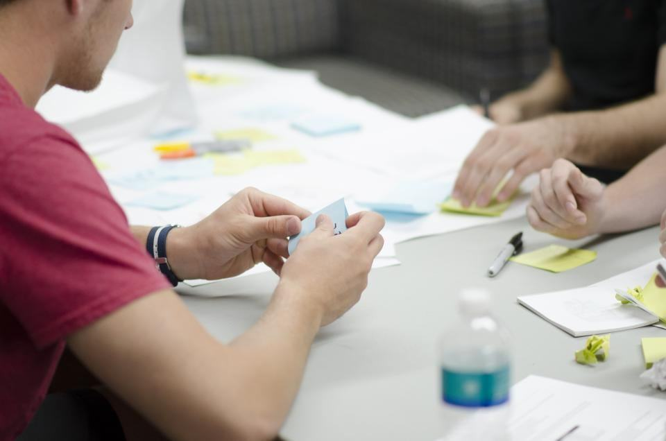

Tjänster
Johan sitter kvar i styrelsen men arbetar i dag som kyrkoherde i Bälinge. På byrån är vi fem: Maria, två rådgivare, en borgerlig officiant och en samtalsterapeut. Vi ordnar ungefär 110 begravningar om året och håller drygt 300 planeringssamtal.
Var befinner ni er?

Planeringssamtal
Vill du bli kremerad eller jordbegravd? Vilken musik, vilka ord, vilka människor? I ett samtal på 90 minuter går vi igenom det tillsammans, och du får en sammanställning hem.
Kostnaden dras av om din familj sedan låter oss ordna begravningen.
Begravningar
Vi tar god tid på oss i mötet med familjen och skriver ceremonin tillsammans. Vi ordnar begravningar i Uppsala domkyrka, Gamla Uppsala kyrka, Uppsala gamla kyrkogårds kapell och på platser utanför kyrkans väggar.
Varje familj får ett uppföljande samtal en månad efter begravningen, utan kostnad.

Sorgegrupper
Grupperna samlar sex till åtta personer under åtta kvällar och leds av vår samtalsterapeut Karin Åberg. Det finns grupper för den som förlorat en partner, en förälder och för föräldrar som mist ett barn.
Grupperna är öppna även för den som haft en annan begravningsbyrå.

Stöd till skolor och arbetsplatser
När en elev eller kollega dör kommer vi ut och pratar med klassen eller arbetsgruppen. Vi har en färdig plan för första veckan som skolor kan använda.
Uppsala kommuns elevhälsa och flera företag har ramavtal med oss.
Vi börjar alltid med att lyssna
- 1

Ett första samtal
Ring eller skriv. Vi lyssnar på var ni befinner er – om någon är sjuk, nyss har dött eller om du vill planera för dig själv.
- 2

Tid att prata
Vi träffas i gårdshuset, hemma eller på hospicet. Mötet får ta den tid det tar.
- 3

Ceremonin
Den som har skrivits tillsammans med er, med ord och musik som betyder något.
- 4

Efteråt
Ett samtal efter en månad, och plats i en sorgegrupp om ni vill.
Legitimerade och auktoriserade
- Auktoriserad av SBFAuktoriserad av Sveriges Begravningsbyråers Förbund sedan 2020.
- Legitimerad terapeutSorgegrupperna leds av Karin Åberg, legitimerad psykoterapeut.
- Legitimerad sjuksköterskaMaria Ekdahl har specialistutbildning i palliativ vård.
- KonsumentskyddVåra avtal följer bestämmelserna för begravningstjänster som tagits fram med Konsumentverket.